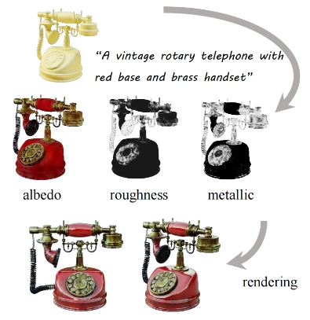

Openings
I will join ISD HKUST as an assistant professor in 2025 spring. I'm going to recruit PhD students (start from 2025 fall), research assistants, and visiting students. We will focus on utilizing neural rendering/representations (NeRF, NeuS, 3D GS), 3D Generative Models and 3D LLMs for solving the following tasks.
- AI for 3D Asset Generation.
- 3D/4D Video Generation and Editing.
- City-scale 3D Reconstruction and Analysis.
If you are interested in working with me on these topics, please fill the Google form here and drop an email to yuanly@connect.hku.hk. I have experience in mentoring master or junior PhD students. Refer to the Mentoring section for more details.
Publications (Selected / Full Publication List)
*Equal contribution †Corresponding author
|

|
DreamMat: High-quality PBR Material Generation with Geometry- and Light-aware Diffusion Models
SIGGRAPH 2024 (TOG)
|
|
|
Era3D: High-Resolution Multiview Diffusion using Efficient Row-wise Attention
arXiv 2024
|
|
|
SyncDreamer: Generating Multiview-consistent Images from a Single-view Image
ICLR 2024 (Spotlight)
|
|
|
Wonder3D: Single Image to 3D using Cross-Domain Diffusion
CVPR 2024 (Highlight)
|
|
|
NeRO: Neural Geometry and BRDF Reconstruction of Reflective Objects from Multiview Images
SIGGRAPH 2023 (TOG)
|
|
|
F2NeRF: Fast Neural Radiance Field Training with Free Camera Trajectories
CVPR 2023 (Highlight)
|

|
RoReg: Pairwise Point Cloud Registration with Oriented Descriptors and Local Rotations
TPAMI 2023
|
|
|
Gen6D: Generalizable Model-Free 6-DoF Object Pose Estimation from RGB Images
ECCV 2022
|
|
|
Neural Rays for Occlusion-aware Image-based Rendering
CVPR 2022
|
|
|
NeuS: Learning Neural Implicit Surfaces by Volume Rendering for Multi-view Reconstruction
NeurIPS 2021 (Spotlight)
|

|
PVNet: Pixel-wise Voting Network for 6DoF Pose Estimation
CVPR 2019 (Oral)
|
Mentoring
I spent wonderful time working with talented master or junior PhD students on some interesting research projects as follows.
- Haiping Wang: YOHO (MM'22), RoReg (TPAMI'23) SGHR (CVPR'23) FreeReg (ICLR'23)
- PhD at WHU.
- Runsong Zhu: AdaFit (ICCV'21)
- Master at WHU, Ph.D. at CUHK
- Yuqing Zhang: DreamMat (SIGGRAPH'24)
- Master at ZJU
-
Jionghao Wang:
SO-SMPL (arXiv'23)
- Master at SJTU, PhD at TAMU
-
Peng Li:
Era3D (arXiv'24)
- PhD at HKUST
-
Wenqi Jiangying:
GaussianShader (CVPR'24)
- PhD at ShanghaiTech University
-
Anran Liu:
NeRFBuff (TVCG'24),
Part123 (SIGGRAPH'24)
- PhD at HKU